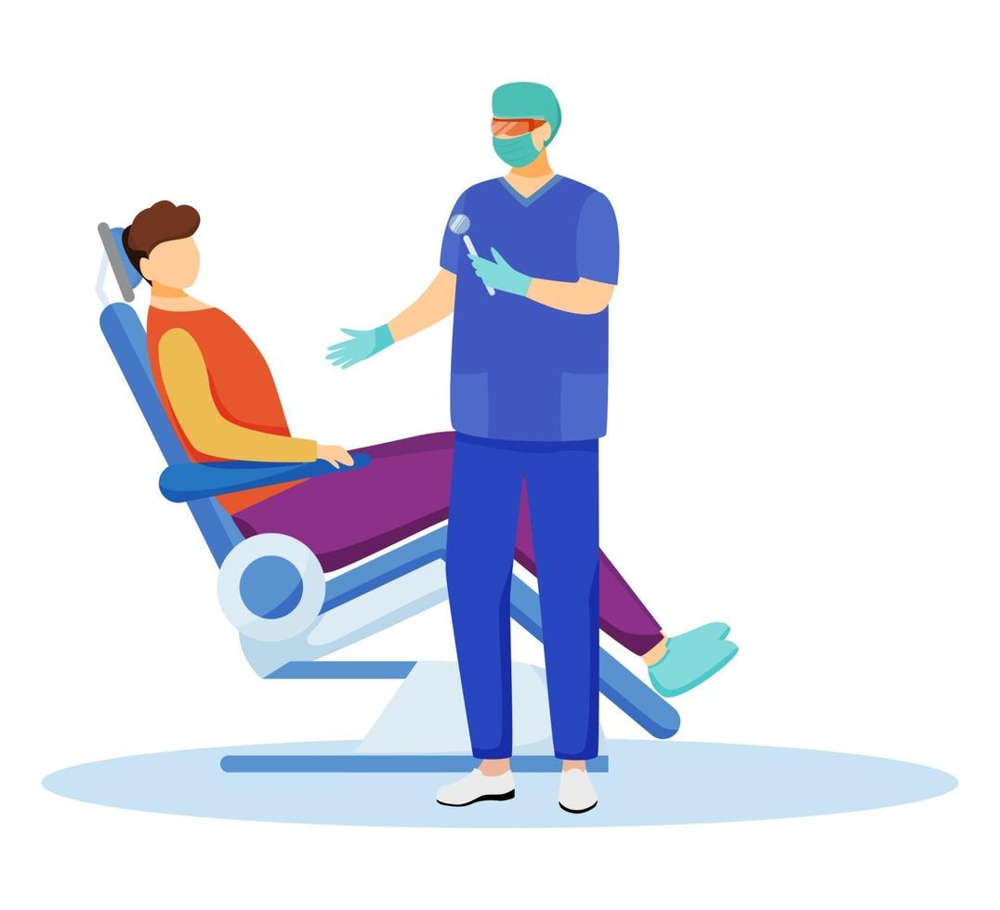

Elige una opción
Gestión de Odontólogos
Aquí puedes gestionar los datos de los odontólogos: alta, baja y actualización de información.
Ir a Odontólogos

Gestión de Pacientes
Maneja la información de los pacientes, desde el registro hasta la actualización de sus datos.
Ir a PacientesGestión de Turnos
Administra los turnos de los pacientes con los odontólogos, así como la asignación de citas.
Ir a Turnos